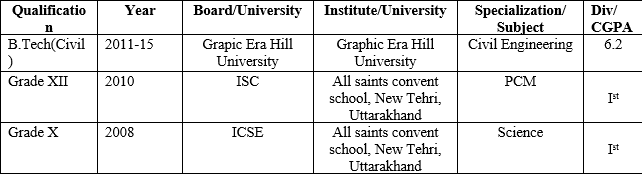

MY RESUME
SHASHANK UNIYAL
Mobile No. 9675873047
email-suniyal047@gmail.com
Objective
To be part of renowned organization and to contribute towards the growth of organization & to further my personal capabilities by learning from the exposure within the structured framework of the organization.
Personal Skills
- Ability to use sound judgment and to contribute towards the effectively perform in a self-directed environment.
- Comprehensive problem solving abilities.
- Effective Communication Skills & Fluent in English.
- Willingness to learn.
Professional
- Worked under Class A Contractor from July 2015 till 18th July 2016 as a Site Engineer.
- Served in Uttrakhand Peyjal Nigam as a Junior Engineer from 22nd July till 31st March 2017.
- Served in BRIDCUL,Uttarakhand as a Civil Supervisor from 11th July till 31st March 2018.
- Served in JICA Landslide project as an onsite member and GIS trainee in Himalayan surveying services from 1st April till 15th June 2018.
Educational Qualification

Trainings and Project Attended
- Industrial Training at THDC PVt.ltd Uttarakhand. ( Duration : 45 Days).
- Excelled in Auto Cadd and Staad-pro workshop.
- Industrial visit to Chilla Power plant, Rishikesh.
- Project on Contouring in Graphic Era Hill University Campus.
Seminar Attended
- On Advancement of equipment used in Civil Engineering.
- On Advancement of Instruments organized by AIMIL Industries pvt. ltd.
Extra curricular activities
- Played cricket at district level.
- Actively participated in blood donation camp.
- Member of winning cricket team in inter school tournament.
- Active participant of marathons for social cause.
- Organized sports event in school and college.
- Member of disciplinary committee during Grahillfest.
- Member of science Exhibition and GK Competition in Inter school competition.
Personal Information
Name : Shashank Uniyal
Father’s Name : Mr. Mahavir Prasad Uniyal
Date of Birth : 15th September 1992
Nationality : Indian
Language Known : Hindi, English
Hobbies : Playing cricket, football, listening music
Correspondence Address : Sector 5A, room number A-2, Baurari, New Tehri,Tehri-Garhwal, Uttarakhand
I hereby, declare that all statement made & the particulars given in the CURRICULUM VITAE are true, complete & correct to the best of my knowledge.
Date:01-01-2021.
Place:Dehradun.
(Shashank Uniyal)